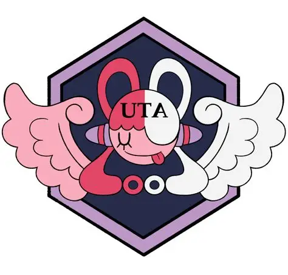
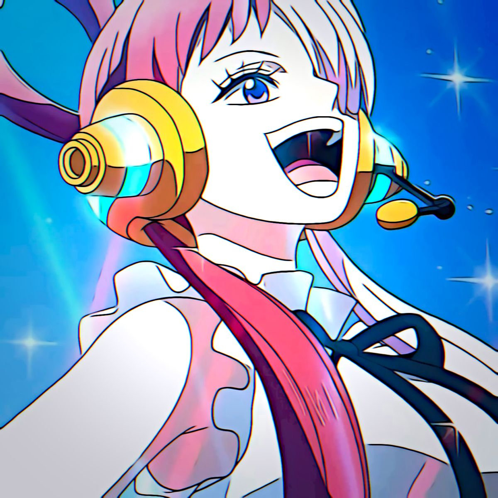

Uta adalah seorang diva terkenal di seluruh dunia (歌姫, Utahime?) dan anak angkat dari Kaisar Berambut Merah, Shanks. Ia dulunya merupakan musisi dalam kru bajak laut Shanks. Dalam filler "Uta's Past Arc", ia bertemu dan berteman dengan Monkey D. Luffy di Desa Foosha saat mereka masih anak-anak.
Setelah ditinggalkan di pulau Elegia oleh Bajak Laut Rambut Merah untuk menjadi seorang penyanyi, Uta dilatih di bawah asuhan mantan raja pulau tersebut, Gordon, selama sepuluh tahun. Ia kemudian dengan cepat meraih kesuksesan global dalam dua tahun terakhir. Namun, setelah mengetahui penderitaan yang dialami para penggemarnya akibat ulah bajak laut, Uta merancang sebuah rencana untuk mengakhiri Era Bajak Laut Besar dan menciptakan "New Genesis di mana semua orang hidup damai selamanya di dalam "Uta World"-nya.